Історія бренду CONVERSE
«Кожні 43 секунди у світі хтось купує пару Converse CT All Star.»
У кожної субкультури є свої символи. У футбольних фанатів — олімпійки та вінтажні кеди Adidas, в адептів хіп-хопу — об’ємні худі та номерні Air Jordan, у скейтбордистів — потерті Vans і мішкуваті штани-чіноси. Але є й такі символи, які можна пов’язати одразу з кількома субкультурами або навіть цілими культурними пластами. І до останніх явно належать Converse Chuck Taylor All Star, або ж просто «Чаки». Про них сьогодні й поговоримо.
Історія найзнаменитіших старожилів від світу спортивного взуття починається майже сто років тому, тому почнемо з витоків.
За 70 років до початку епохи Джордана
Заснована 1908 року Маркізом Міллзом Конверсом у Мейдені, Массачусетс, компанія Converse Rubber Shoe Company спочатку спеціалізувалася на випуску виробів з гуми, а також зимового взуття на гумовій підошві.
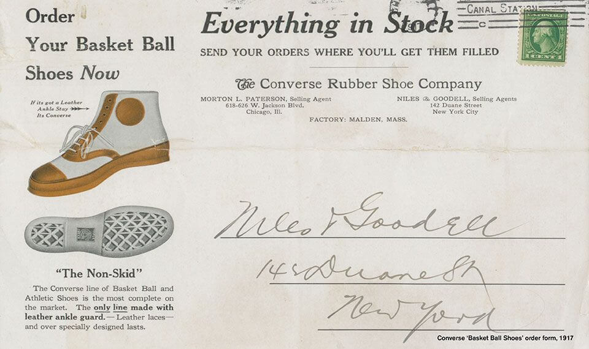
Почавши потроху виходити на ринок спортивного взуття, компанія за кілька років розробила моделі для різних видів спорту — тенісу, нетболу (прим. один із різновидів баскетболу) і футболу. Але по-справжньому «свою нішу» компанія зайняла лише після того, як у середині 1910-х вирішила зайнятися виробництвом баскетбольного взуття.
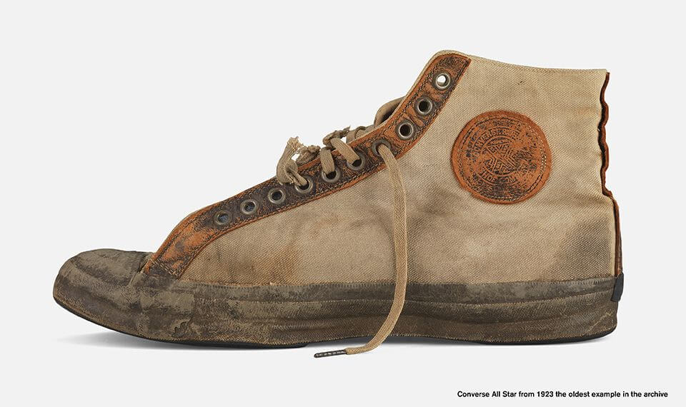
Найстаріший архівний каталог спортивного взуття Converse, в якому згадуються кеди для баскетболу, датовано 1916 роком, а найзнаменитішу модель бренду представили в широкому продажі у 1917 році. Спочатку вона називалася Converse Non-Skid, тоді як сучасну назву All Star моделі присвоїли лише за три роки, у 1920 році. Продавалася вона досить посередньо і дещо відрізнялася від тих кед, які відомі нам сьогодні.
Так було аж до 1921 року, поки до команди бренду не приєднався колишній баскетболіст Чарльз «Чак» Тейлор. Кілька сезонів він виступав у місцевій напівпрофесійній лізі і грав виключно в Converse Non-Skid. Коли ж його спортивна кар’єра добігла кінця, Тейлор, недовго думаючи, вирішив спробувати щастя в чиказькому офісі Converse. У складі компанії він отримав особливе місце, ставши «пропагандистом» і своєрідним менеджером з розвитку Converse.
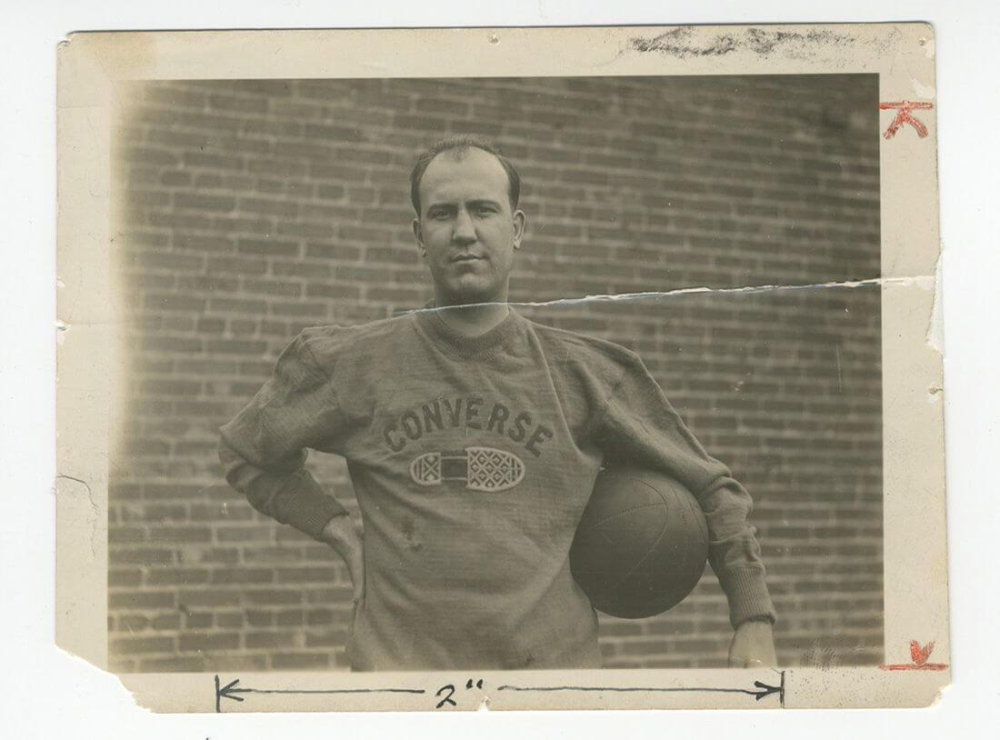
Цей харизматичний молодий підприємець підштовхував компанію до постійного вдосконалення моделі — і у відношенні технологій, і у відношенні дизайну. Завдяки своїй комунікабельності та розумінню баскетбольної індустрії, він зміг налагодити тісний контакт компанії з гравцями та тренерами, роблячи All Star кращими та популярнішими з кожним роком.
«У нього було абсолютно захоплююче життя», — заявив в інтерв’ю журналу The Philidelphia Inquirer Джо Дін, колишній менеджер з продажу Converse. «Перед ним було неможливо встояти. До того ж, він [Чарльз] знав абсолютно всіх. Наприклад, якщо ви були тренером і потребували роботи, то зверталися до нього. Старші тренери команд, у свою чергу, зверталися до нього, коли шукали додаткових тренерів».
Тріумфальна хода Чака Тейлора США
Всерйоз взявшись за популяризацію моделі, Тейлор сів у білий Cadillac, завантажений вщерть Converse All Star, і вирушив у подорож через усю Америку, щоб якомога більше команд і тренерів дізналися про переваги нових баскетбольних кед Converse. Оригінальний дизайн поєднував у собі товсту підошву з міцної гуми і чорно-коричневий верх із високим коміром зі шкіри та текстилю, новаторським на той час.
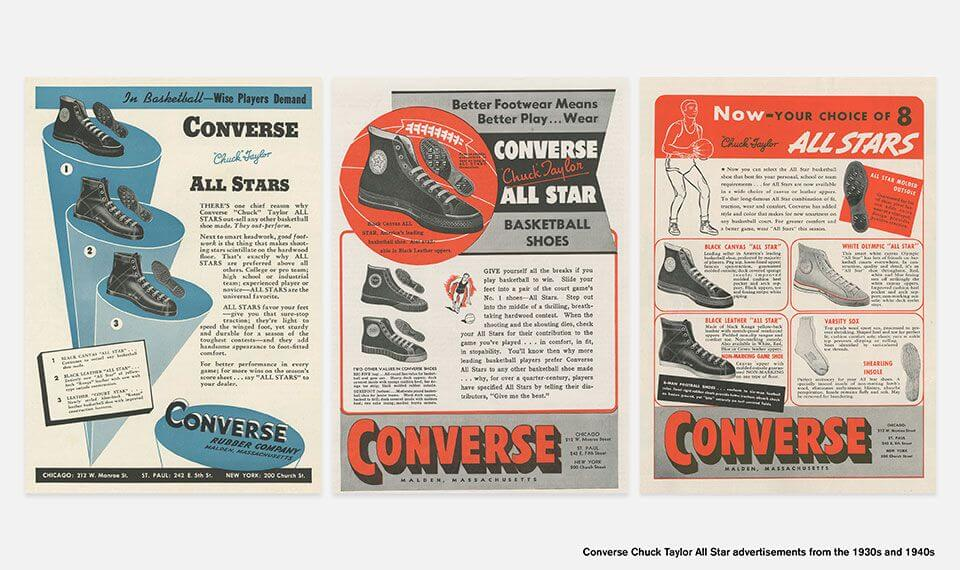
Збираючи фідбек від баскетболістів через Чака Тейлора, а також вивчаючи зворотний зв’язок від читачів власного баскетбольного журналу, Converse поступово удосконалювали модель, ущільнюючи деякі деталі, або змінюючи матеріали (наприклад, 1925 року кеди оснастили корковими устілками).
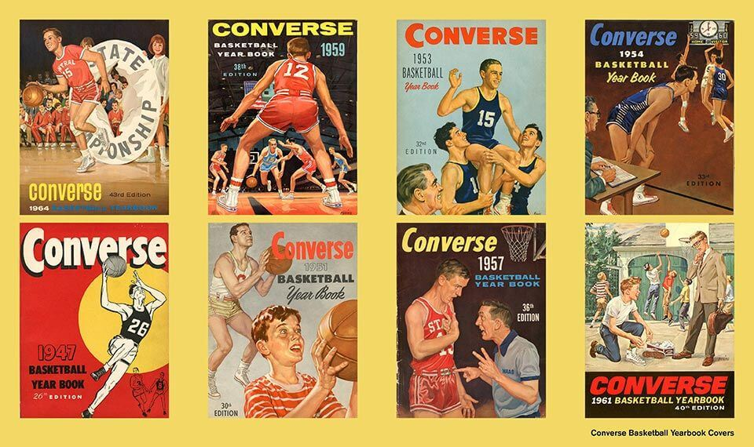
До 1934 року баскетбольна лихоманка захопила всі куточки країни. Водночас успіхи Converse стали настільки масштабними, а вплив Тейлора настільки величезним, що 1934 року Converse додали до назви моделі приставку Chuck Taylor і прикрасили кеди характерною нашивкою з його підписом (до речі, вона виконує захисну функцію). Тоді ж було додано і фірмову вентиляцію з боків.
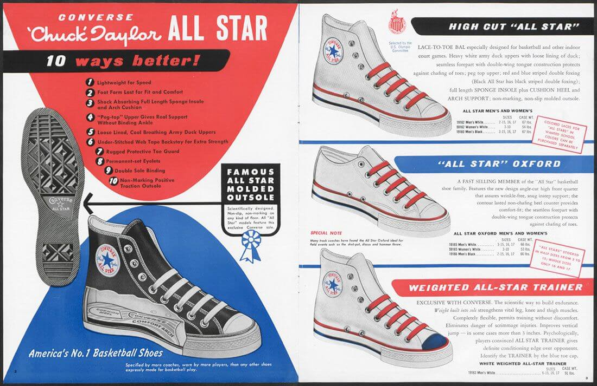
1936 року з його подачі в продажу з’явилися високі білосніжні Chuck Taylor All Star, що стали офіційним взуттям баскетбольної збірної США в першому чемпіонаті з баскетболу на Літніх Олімпійських Іграх у Берліні (тоді США посіли перше місце). Трохи пізніше кеди з патріотичними червоними та синіми лініями на підошві також стали офіційним спортивним взуттям збройних сил США під час Другої Світової війни. Завдяки перемозі збірної США на Олімпійських Іграх у Берліні, баскетбол став ключовим професійним спортом у Штатах.
1946 року Національна Баскетбольна Ліга та Баскетбольна Асоціація Америки об’єдналися для створення єдиної Національної Баскетбольної Асоціації (сьогоднішня NBA). Її правила передбачали розробку розробку єдиного стандарту ігрової форми, в якій повинні виступати баскетболісти. І в цей момент знамениті хайтопи Converse стали не тільки головним взуттям професійних гравців, а й студентів коледжів, шкіл і всіх гравців-аматорів.
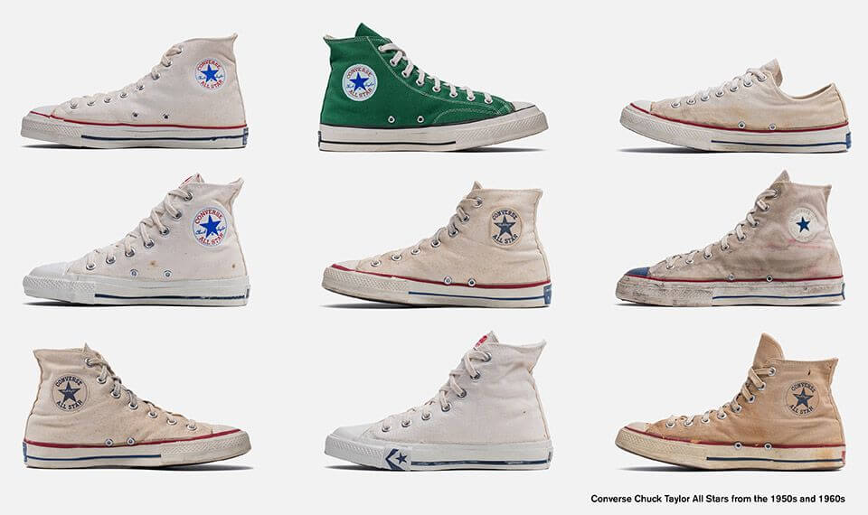
Власне, золота епоха Converse та їхніх CT All Star припала на 40-ті та 60-ті роки, коли взуття бренду стало популярним серед абсолютно всіх спортсменів (і, можливо, породило ціле покоління спортсменів, що страждають на плоскостопість, ага). У ті часи бренд контролював 80% американського ринку спортивного взуття. У 1949 році бренд представив культові чорно-білі Converse All Star Hi, а в 1957 році на світ з’явився їхній варіант із «низьким» коміром (Converse CT All Star Ox, або «Oxford Cut»). Потім у 60-х роках у продаж надійшли кольорові версії моделі, які нарешті можна було пофарбувати у фірмові кольори різних баскетбольних команд.
70-ті: Час змін
На початку 70-х спортивне взуття стало настільки популярним, що багато хто став носити його просто в повсякденному житті, а не на корті або в тренажерному залі. На цей тренд швидко відреагували багато взуттєвих компаній, запустивши у виробництво масу псевдо-спортивних моделей для спорту і відпочинку. І все ж, одним із головних гравців на ринку спортивно-повсякденного взуття залишалися CT All Star, які отримали тоді прізвисько «Chucks», або «Чаки»: велика палітра забарвлень, які випускали з 60-х років, сприяла цьому. Підлітки, бебі-бумери, рок-зірки, вуличні художники і всі можливі трендсеттери від квітучої поп-культури надихнулися кольоровими і креативними кедами, за допомогою яких можна було якось підкреслити свою індивідуальність.
Однак, з іншого боку, у 70-ті для бренду «подув вітер змін». У цей період світ охопило повальне захоплення фітнесом і зростаючий інтерес до високотехнологічних кросівок від молодих брендів, таких як Nike, Adidas і PUMA. З ними ж на ринку з’явилося і баскетбольне взуття абсолютно нового покоління.
«…Гравці НБА носили CT і були найкращими. Таким чином, це взуття хотіли носити всі. Коли я був у складі Nets, у мене були іменні шкіряні Chuck Taylor, $19.95 за пару. Це було гарне взуття, але воно не могло зрівнятися з Air Jordan. Мені доводилося використовувати ортопедичні устілки, поки я грав у Chuck Taylor», — згадує Майкл Рей Річардсон, захисник New York Knicks, Golden State Warriors і New Jersey Nets з 1978 по 1986 р.. А 1969 року Converse втратив свого головного адвоката і промоутера: з життя пішов Chuck Taylor, який роком раніше потрапив до лав Баскетбольного Залу Слави імені Нейсміта.
80-ті та 90-ті: зі спортивної кар’єри в музичну
80-ті та ранні 90-ті, насичені гранж-культурою з Куртом Кобейном (фронтмен Nirvana) на чолі, змінили культурний контекст, у якому світ звик сприймати Converse. Доступні та стильні, представлені в безлічі різних матеріалів і кольорів, Converse підірвали ринок, ставши ключовою моделлю повсякденного взуття серед покоління X.
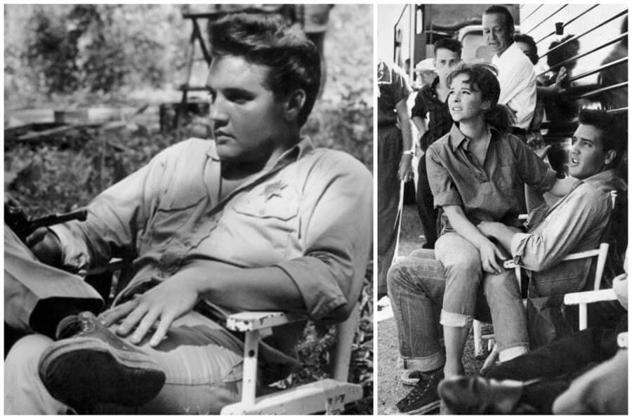
Його представників не цікавило баскетбольне минуле Converse. Зокрема, Томмі Рамоун (барабанщик The Ramones), який хизувався в чорно-білих CT All Star, відповів, хто такий Chuck Taylor, так: «Можливо, він був баскетбольним тренером або щось на зразок того. Я не знаю. Він зробив чудове дешеве взуття».
Варто зазначити, що свого часу Converse All Star були фаворитами таких культових музикантів, як The Strokes, Fugazi, Snoop Dogg, Blondie, Ice Cube, The Rolling Stones, Nirvana та багатьох інших.
Rolling Stones навіть зробили CT All Star офіційним взуттям туру «Steel Wheels Tour» 1989 року. Власне, по сьогоднішній день багато музикантів люблять «чакі» і випускають разом з Converse власні версії моделі (згадайте хоча б Tyler, The Creator, Vince Staples, Miley Cyrus та ін.).
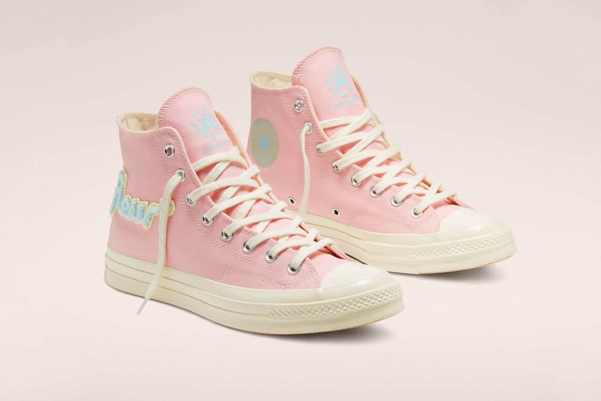
Культурну значущість CT All Stars неодноразово відзначали не тільки в рамках світу музики та навколомузичних субкультур, а й у світі сучасного мистецтва. Один з його видатних представників, Енді Воргол, зобразив легендарну модель кед на картині «Converse Extra Special Value» (1985-1986 рр.).
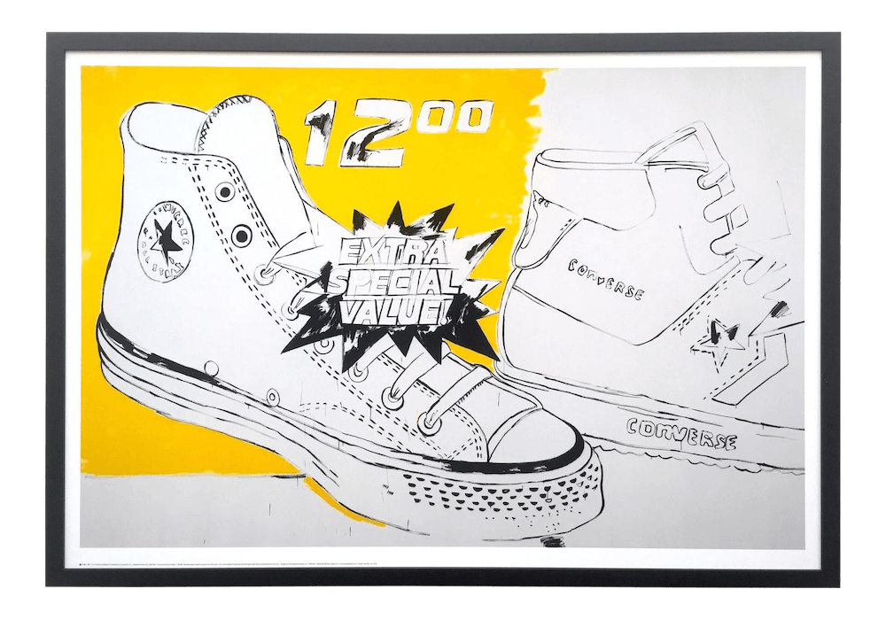
Окремо варто зазначити, що Converse CT All Star можна по праву вважати одними з найбільш «кінематографічних» кед в історії: вони фігурують у безлічі культових фільмів і серіалів, починаючи з «Роккі» і «На голці» і закінчуючи «Я – легенда” і «Ейфорія». Список по-справжньому величезний.
00-ті: нове тисячоліття — новий курс
Багате славне минуле, на якому Converse благополучно «виїжджали» впродовж кількох десятиліть, у якийсь момент перестало працювати так, як від нього очікували. Бренд не зумів вчасно оцінити кризу, що наближається, і зростання конкуренції, а тому опинився в критичному становищі до початку нульових. Після кількох змін керівництва в Converse оголосили про банкрутство в 2001 році.
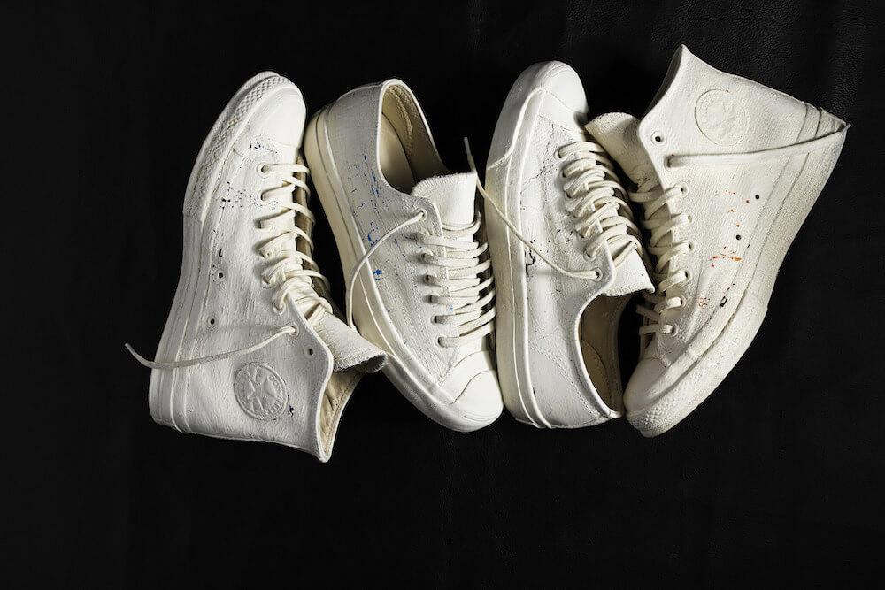
На щастя для бренду, його придбав Nike, який вважав за краще абстрагуватися від атлетичного минулого бренду і зосередитися на його креативній цінності.
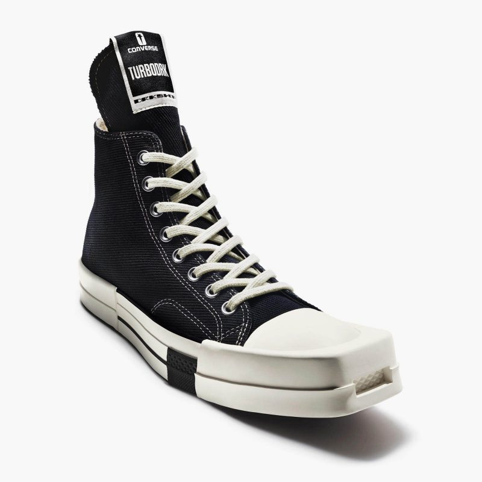
Зробивши ставку на класичний силует як основу для творчості та експериментів, Nike залучив до співпраці з Converse Givenchy, Missoni, Comme des Garçons Play, John Varvatos і Maison Martin Margiela.
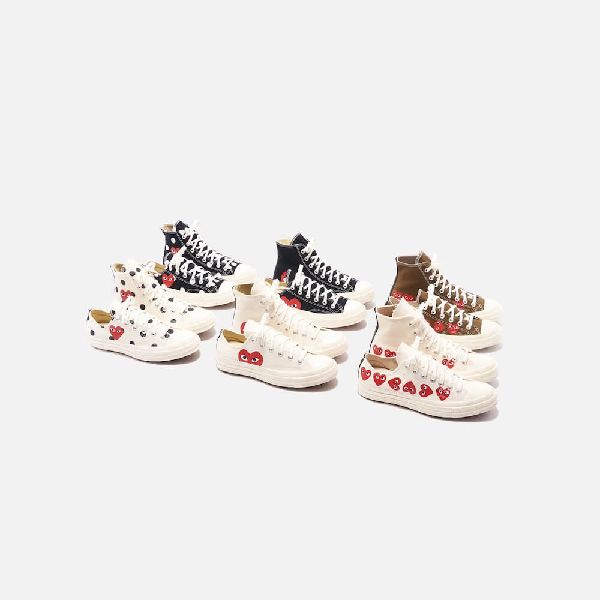
Серед гучних перемог на творчому фронті опинилися також видання CT All Star, верх яких був викроєний зі справжнього полотна від поп-арт художника Нейта Лоумана.
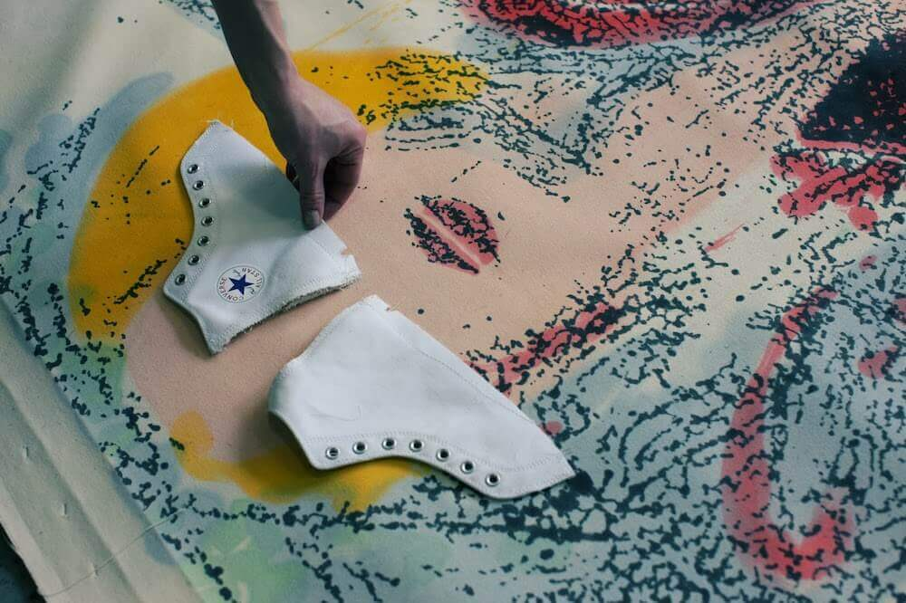
Кожна з унікальних пар пішла з молотка за $25,000. Усе вказувало на те, що обрана стратегія себе виправдала: у 2012 році доходи бренду склали $1,4 мільярда проти $205 мільйонів, зароблених компанією 2002 року.
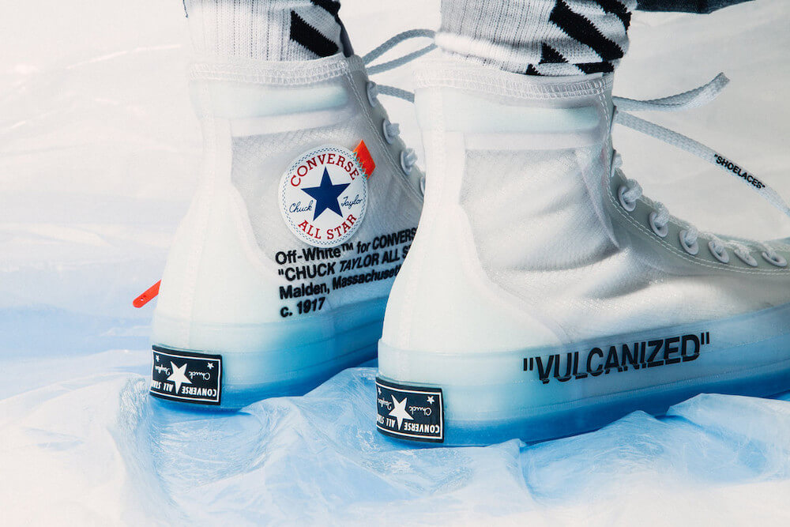
«Сьогоднішній пріоритет марки — бути брендом для творчих особистостей і бути брендом, який ними ж надихається», — заявив одного разу в інтерв’ю Footwear News виконавчий директор Converse Джим Калхун.
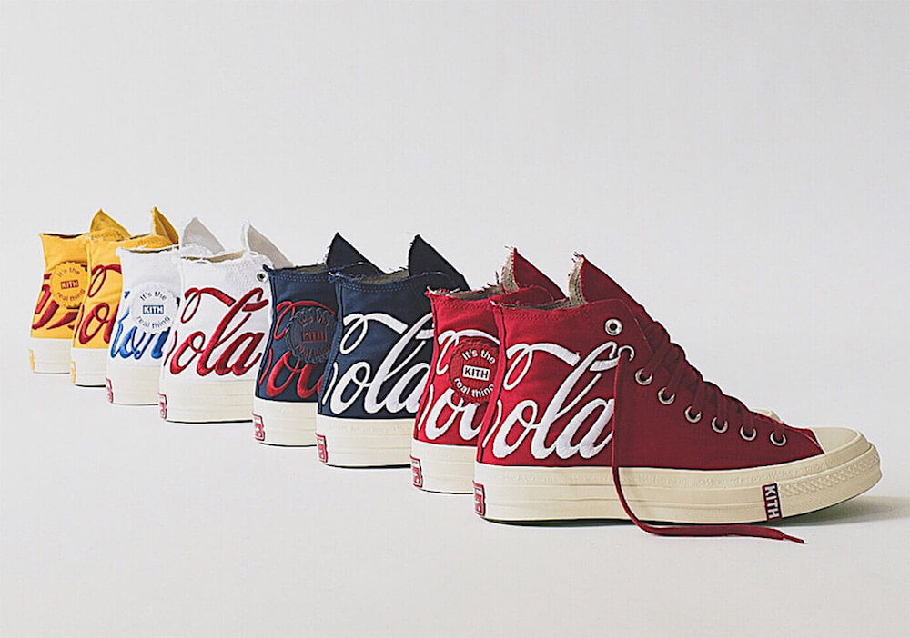
Незважаючи на повагу до баскетбольного минулого бренду, основне виробництво на ігровій баскетбольній лінії було закрито дещо на початку 2010-х, вперше з моменту її запуску. За словами виконавчого директора Converse, «…було так страшно прощатися з баскетболом, що ми доклали величезних зусиль, щоб зберегти свою актуальність на цьому ринку. Величезним відкриттям став той факт, що наша історія не закінчується на відносинах зі спортом».
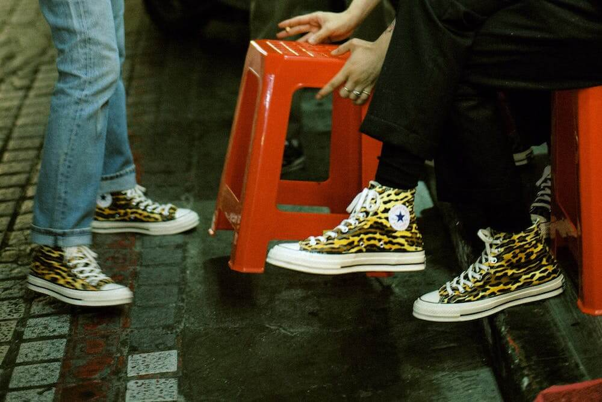